Park stage · 16:00
Aneta Langerová
Jedna z nejvýraznějších českých zpěvaček a držitelka řady cen Anděl. Na Bluestone přiveze svůj koncert pod širým nebem v podvečerním slunci.
3. ročník · open air · 2 stage
Aneta Langerová · Dan Bárta & Ota Balage Rock Orchestra · Piel Canela Marseille (FR) · František Zeman Band · Pan Lynx
Program 2027
Park stage · 16:00
Jedna z nejvýraznějších českých zpěvaček a držitelka řady cen Anděl. Na Bluestone přiveze svůj koncert pod širým nebem v podvečerním slunci.
Park stage · 22:00 · hlavní hvězdy večera
Hlas, který nepotřebuje představovat, a rockový orchestr v zádech. Závěrečný koncert festivalu, který potáhne až k půlnoci.
Sobota 10. 7. 2027
Změna programu vyhrazena.
Poznej umělce
Kdo jsou, co hrají a odkud přijíždějí. Pusť si je na Spotify nebo Apple Music a 10. 7. je uslyšíš v Kamenici.
Benešov · pop / alternativa
Vítězka první řady Česko hledá SuperStar (2004) a trojnásobná Zpěvačka roku v cenách Anděl. Od debutu Spousta andělů přes alba Dotyk a Jsem si vybudovala vlastní autorskou cestu.
Česko · rock s orchestrem
Dan Bárta, hlas J.A.R. a Illustratosphere, a Ota Balage, dirigent legendární české verze Jesus Christ Superstar a bývalý šéf orchestru Hudebního divadla Karlín. Rock s plným orchestrálním zvukem jako tečka festivalu.
Marseille · Francie
Zahraniční host ročníku 2027 přijíždí z jihu Francie. Podrobné představení kapely a odkazy na poslech brzy doplníme.
Praha · autorské písně
Písně o životě, lásce a svobodě. Debut Otevřená srdce (2023), jehož titulní skladba se týdny držela v soutěži Česká dvanáctka Českého rozhlasu, a album Kluci ze Šťastný planety (2025). Vedle Františka Zemana zpívá Jana Štěpánková.
Česko · Michal Skořepa
Michal Skořepa, bývalý frontman kapely Stroy a producent desek Kabátu a Wohnoutu. Na debutu Kdo se bojí, musí do lesa hostují Michal Pavlíček, Michael Kocáb nebo členové Wohnoutu.
Šapito stage · acoustic blues
Komorní akustické blues ve dvou setech, v 17:00 a ve 21:00. Představení a odkazy na poslech brzy doplníme.
Vstupenky
Pět kapel za cenu jednoho koncertu. Předprodej začíná 15. 11. 2026. Cena v čase poroste, neváhej a kup si lístky hned.
Start předprodeje 15. 11. 2026
Nech nám e-mail a ozveme se ti, jakmile předprodej spustíme. Super early bird za 990 Kč je jen pro prvních 200 lidí.
990 Kč
prvních 200 vstupenek
1 059 Kč
15. 11. – 31. 12. 2026
1 199 Kč
1. 1. – 30. 6. 2027
1 299 Kč
od 1. 7. 2027
| Kategorie | Předprodej | Na místě |
|---|---|---|
| Dítě do 10 let | zdarma | zdarma |
| Dítě 10–15 let | 490 Kč | 590 Kč |
| Student / senior 65+ / ZTP | 690 Kč | 790 Kč |
| Rodinné (2 dospělí + 2 děti 10–15 let) | 2 990 Kč | — |
Omezený počet
2 490 Kč v předprodeji 2 990 Kč na místě
Kup vstupenku do 24. 12. a dostaneš ji jako PDF připravené k tisku pod stromeček. Letní festival v obálce potěší víc než další svetr.
Všechny ceny jsou včetně DPH. Předprodej startuje 15. 11. 2026.
Pro rodiny
Bluestone se koná v parku, ne na betonu. Odpoledne patří Šapito stage dětem, večer rodičům.
O festivalu
BLUESTONE FEST navazuje na osmiletou tradici festivalu Jurkovič Open Air, který se od roku 2016 konal v Jílovém u Prahy a v Kamenici. Od roku 2025 má svůj domov v parku Dvorská niva v Kamenici, dvacet minut od Prahy.
Na minulých ročnících hráli Buty, MUCHA, The Primitives Group, Igor Orozovič, David Koller nebo Prago Union. V roce 2027 přidáváme druhou scénu – Šapito stage – a program až do půlnoci.
Bluestone Fest 2026
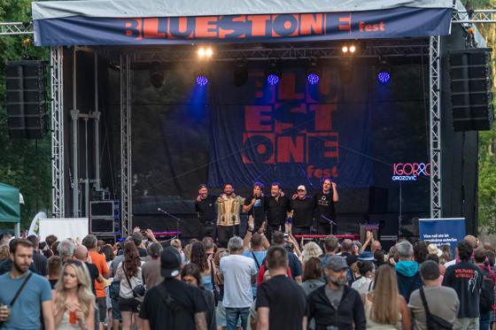
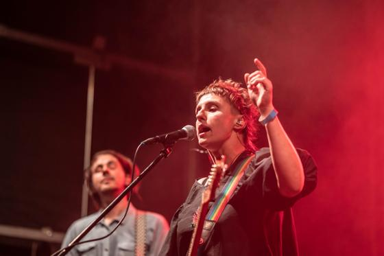
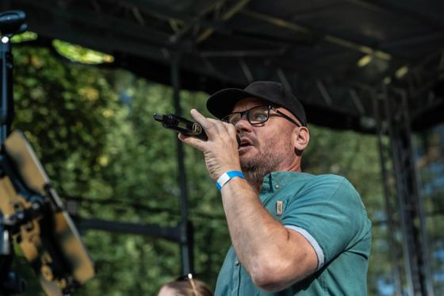
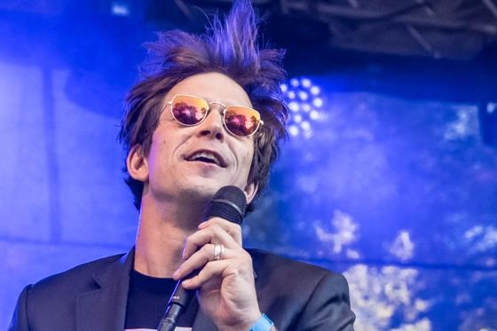
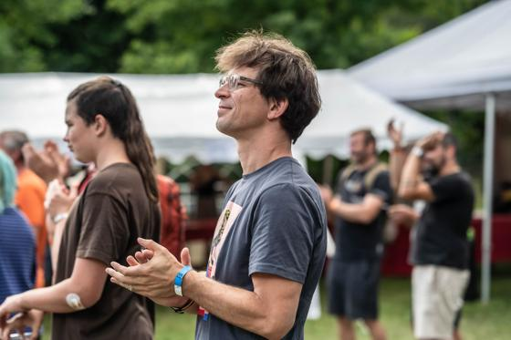
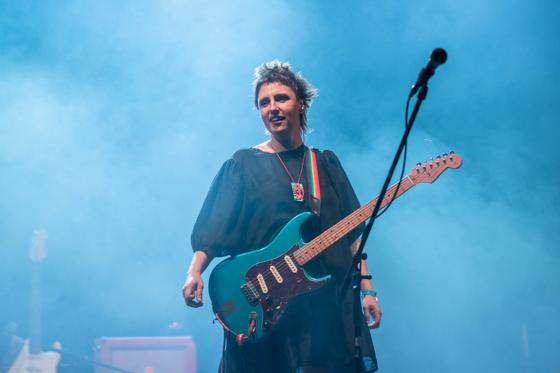
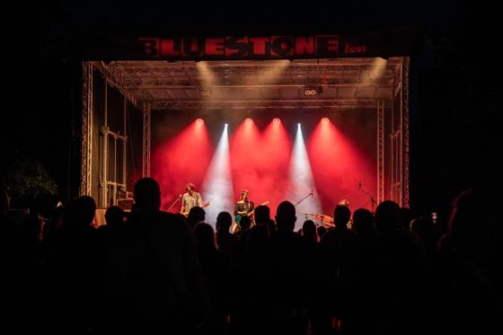
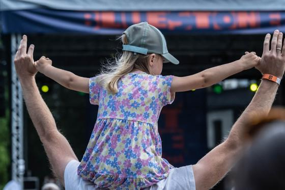
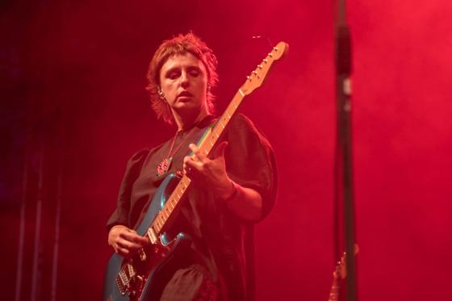
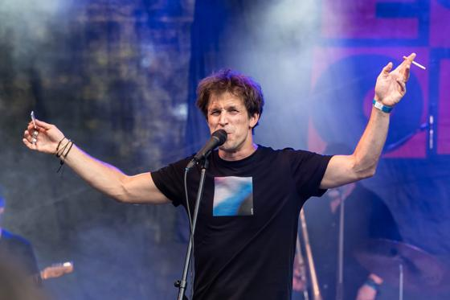
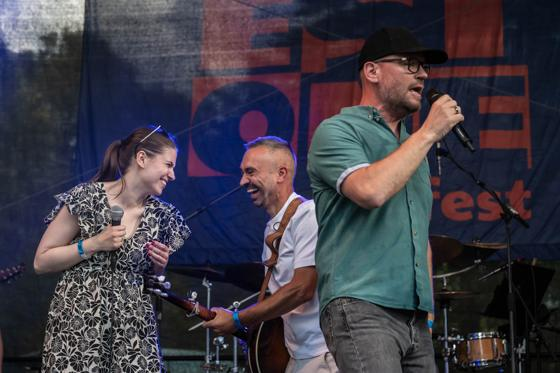
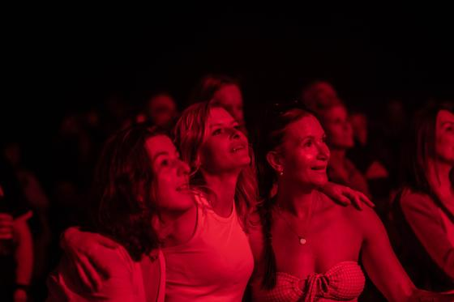
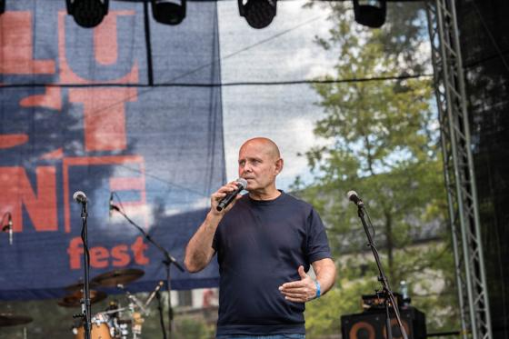
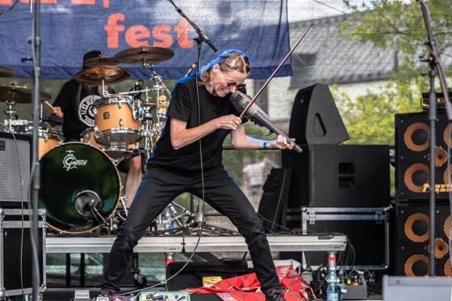
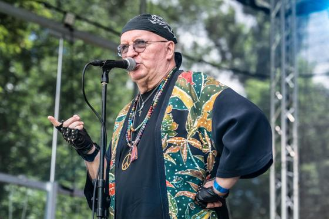
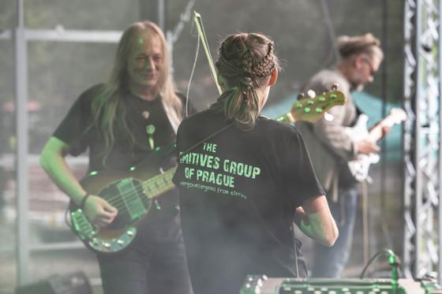
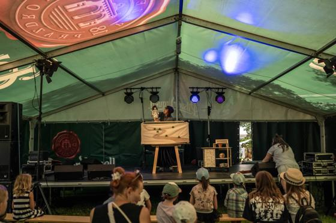
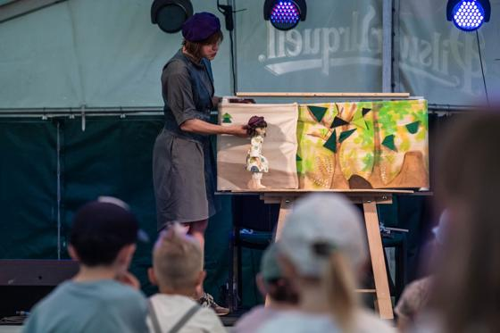
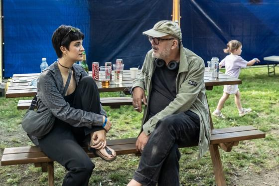
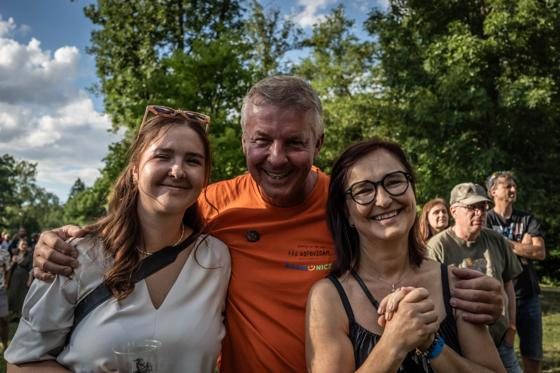
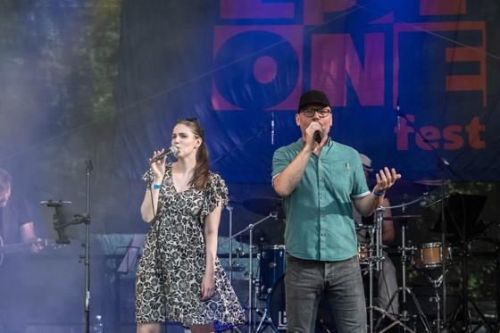
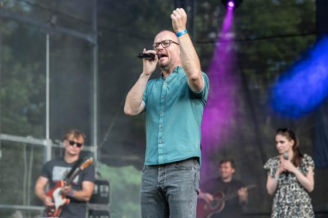
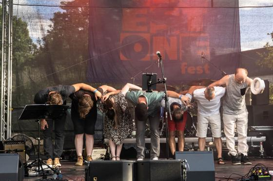
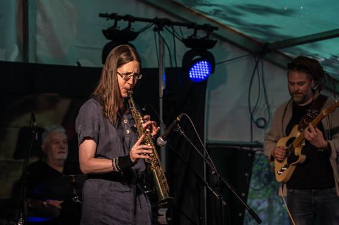
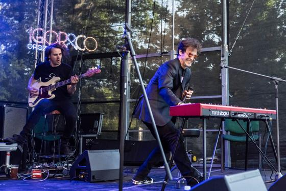
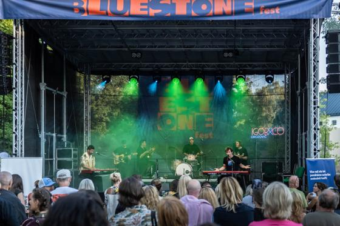
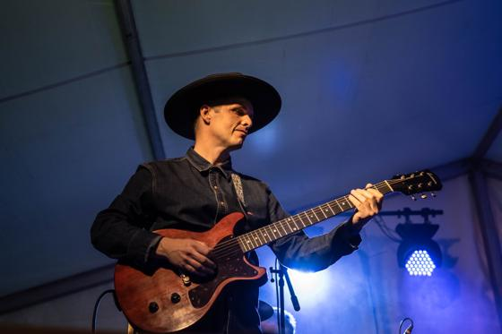
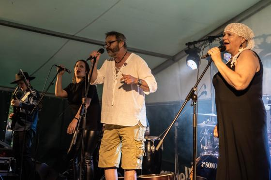
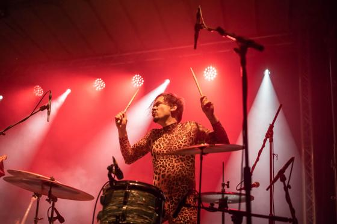
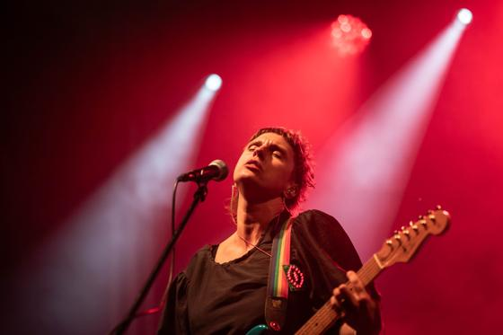
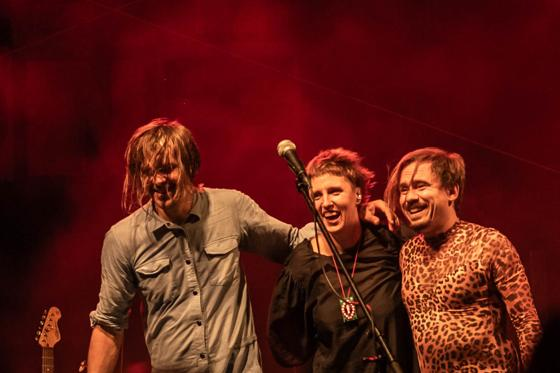
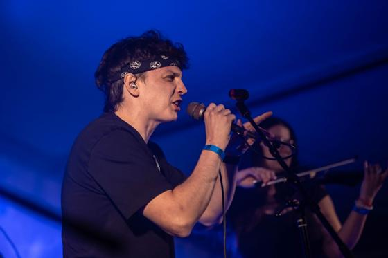
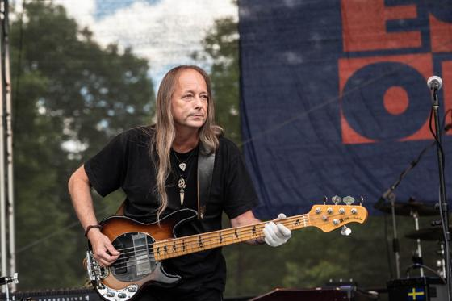
Mapa
Z Chodova asi 22 minut po silnici 603 směr Benešov. V Kamenici sleduj značení k Dvorské nivě. Parkování bude v blízkosti areálu.
Metrem C na Budějovickou, odtud autobus 339 na zastávku Kamenice, Kult. dům. Ze zastávky jsi v areálu pěšky za pár minut.
 Orientační mapa areálu · aktualizovanou verzi pro rok 2027 doplníme
Orientační mapa areálu · aktualizovanou verzi pro rok 2027 doplníme
FAQ
Program začíná ve 14:00. Přesný čas otevření brány zveřejníme v červnu 2027.
Ano, festival se koná za každého počasí. Šapito stage je pod stanem.
Domlouváme s městem Kamenice, informaci doplníme.
15. 11. 2026. Nech nám e-mail v sekci Vstupenky a dáme ti vědět hned při spuštění.
Od 15. 11. 2026 stojí prvních 200 vstupenek 990 Kč. Po vyprodání limitu platí cena vánoční akce 1 059 Kč do 31. 12. 2026.
Nemusíš. Vstupenka ti přijde e-mailem jako PDF a u vstupu ji stačí ukázat v mobilu. Pokud ji chceš darovat, můžeš si ji vytisknout.
Děti do 10 let mají vstup zdarma. Pro děti od 10 do 15 let je zlevněná vstupenka za 490 Kč v předprodeji. Pro 2 dospělé a 2 děti od 10 do 15 let je rodinné vstupné za 2 990 Kč. Odpoledne je pro děti připravená pohádka na Šapito stage.
Ano, stánky s jídlem a pitím všeho druhu, pro malé i velké.
Hudební legendy a letní pohoda. Buď u toho.
Předprodej od 15. 11. 2026